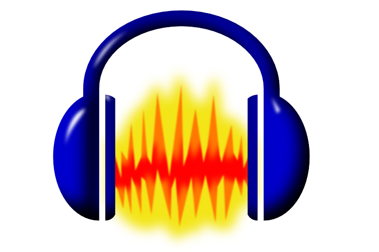
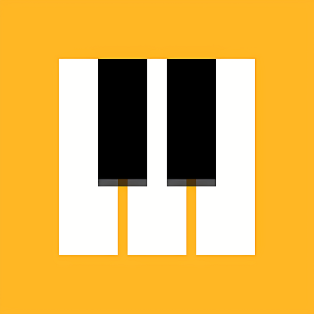
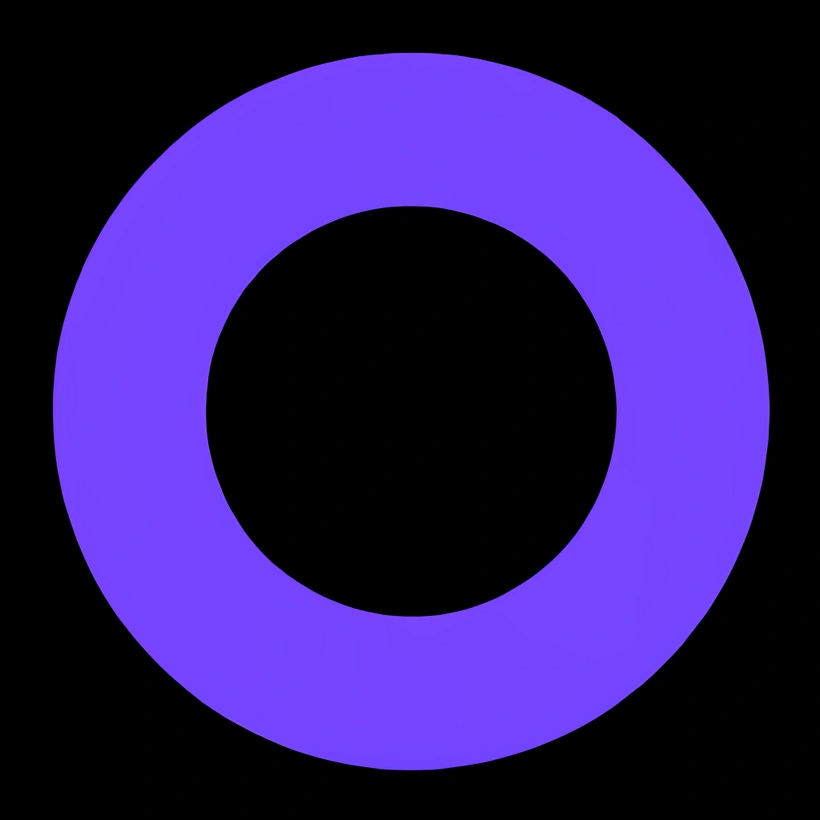
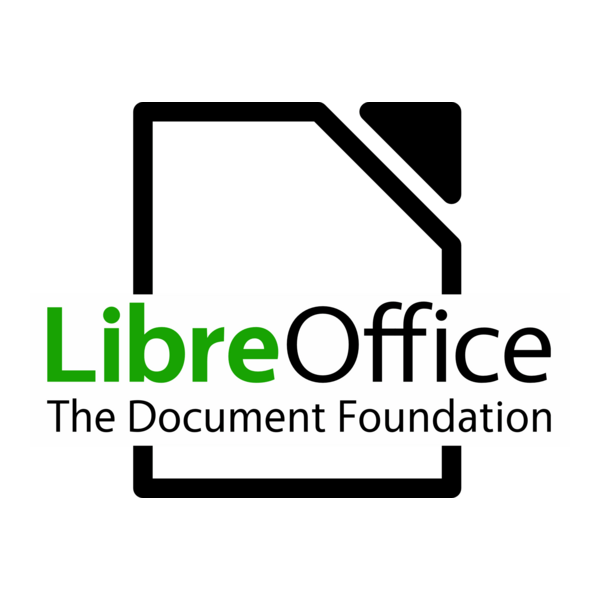

Free Software I love love love
| Icon and Title | Summary | Links |
|---|---|---|
|
 Audacity |
This has been a great software for recording and editing audio! | Audacity User Manual |
 Chrome Lab Music Maker |
There's a few games or programs to play around with within Chrome Music Lab, but 'Song Maker' is the star of the show when it come to easy-to-use music creation software. It's really easy to use on both mobile and desktop browsers. | Chrome Music Lab |
 BeepBox |
Another great browser based music software. It's significantly more comprehensive than Chrome Lab, and it's open source. | BeepBox |
| OpenShot Video Editor | I've been using OpenShot since around 2020. It's not a software I'm proficient with, but I've enjoyed using it for my personal and academic projects. | OpenShot |
 LibreOffice |
An open source office suite. Great alternative to Microsoft Office Suite or Google's online editing software. | LibreOffice |
I whipped this together in like maybe two or three hours. I love free software a lot, and someday I'll sit down and make a nice website or blog about free software that's more comprehensive than this. I oughta add a column to list the platforms each software is available for.
Bonus Table: Free Media
| LibriVox | Free public domain audiobooks! Download and listen to audiobooks; plenty of classic literature. | LibriVox |
|---|---|---|
| Project Gutenberg | An online library of free eBooks! Available for download in multiple formats | Project Gutenberg |
I really enjoy download classical horror literature from both LibriVox and Project Gutenberg. I especially enjoy the ability to enjoy my audiobooks offline.